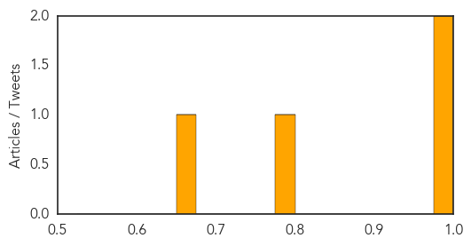
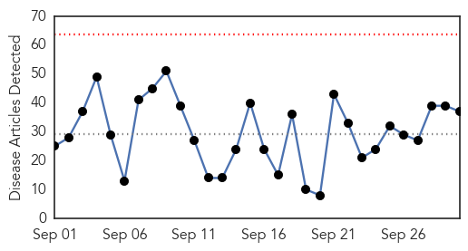
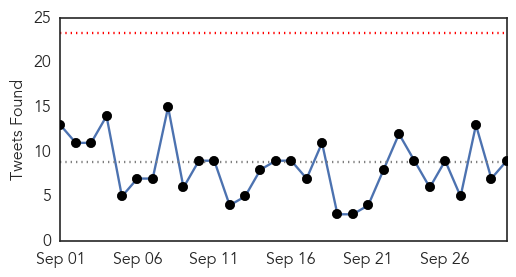
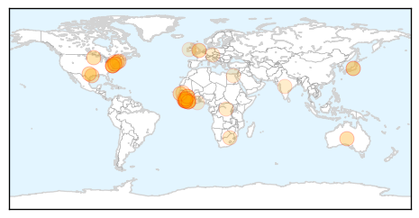
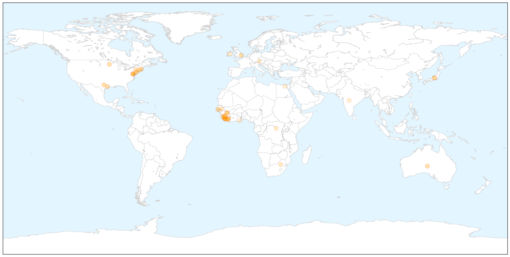

West Nile Virus
30-Day Web Trend
0 alerts, 0 warnings

30-Day Twitter Trend
0 alerts, 0 warnings

Article Locations


Article Confidences
Top Articles:
Top Tweets:
-
No tweets found for Sep 30, 2015
Ebola
30-Day Web Trend
0 alerts, 0 warnings

30-Day Twitter Trend
0 alerts, 0 warnings

Article Locations

X

Article Confidences

Top Articles:
- 0.999
- International Cooperation the Key to Stopping Ebola
- 0.999
- Reflecting on Lessons Learned from Ebola Outbreak
- 0.999
- Ebola cannot be conquered without understanding Africa's culture, politics and poverty
- 0.999
- Ebola cannot be conquered without understanding Africa's culture, politics and poverty
- 0.998
- Ebola is all but over, but the postmortem is just getting started
- 0.997
- Global Surveillance of Ebola, Infectious Diseases Needs More TLC
- 0.995
- Observer
- 0.994
- Editorial: A year after Ebola, Dallas learned lessons the hard way
- 0.992
- Guinea reports 4 Ebola cases; WHO details response reforms
- 0.985
- At UNGA, preventing the next outbreak by supporting right to health
- 0.978
- Presidents of Sierra Leone and Liberia outline post-Ebola recovery plan in UN Assembly
- 0.976
- Presidents of Sierra Leone and Liberia outline post-Ebola recovery plan in addresses to UN Assembly
- 0.973
- WHO Director-General delivers lecture at Georgetown University’s Global Futures Initiative
- 0.972
- Plymouth Medics Fight Viral Fever In Sierra Leone
- 0.971
- Kids With Ebola, Bird Flu Or TB? Texas Children's Hospital Will Be Ready : Shots
- 0.969
- A year later, Ebola fears fade but worries remain
- 0.942
- It Could Soon Be Much Easier To Diagnose Ebola Thanks To This Student’s New Invention
- 0.886
- One dead and 13 sick in new outbreak of Legionnaires' disease in New York City
- 0.870
- Mobile Radio Skits Raise Ebola Awareness in Sierra Leone
- 0.843
- Ebola distracts while enterovirus D68 spreads and gets scarier
- 0.807
- Ethiopia: New Partnership to Close Gaps in Primary Health Care
- 0.755
- Time’s Person of the Year speaks at ISU
- 0.745
- Ellen wants health, human security prioritized
- 0.740
- PRESIDENT SIRLEAF WANTS HEALTH AND HUMAN SECURITY PRIOTIZED IN POST- 2015 DEVELOPMENT AGENDA
- 0.727
- The Body Collectors of the Ebola Epidemic
- 0.722
- Africa: S. Africa to Co-Host China-Africa Health Forum
- 0.714
- Liberia: Nyenswah Tells World 'Liberia Has Effectively Beaten Ebola'
- 0.661
- Nurse blasts Chris Christie for child vaccination comments
- 0.643
- U.S. incentive program may alter the challenging economics of Ebola vaccines
- 0.642
- Fistula program validates postgraduate curriculum
- 0.641
- After Ebola: Mobile Phone Survey Penetrates Ebola-affected Zone, Shows Major Economic Disruption in Liberia and Sierra Leone
- 0.596
- Recovery after crisis: The transition from disaster relief to sustainable development
- 0.588
- Health forum discusses emerging ‘threats and opportunities'
- 0.541
- Celebrating the Rollins impact
- 0.514
- Communities benefit from special Ebola education programme
- 0.513
- Sierra Leone News: School of Mid-Wifery mirrors Curricula « Awoko Newspaper
- 0.506
- Ellen Rallies for Free Global Healthcare
Top Tweets:
- 0.854
- A resurgence of Ebola cases in Guinea and Sierra Leone causes to extend Ebola response efforts into 2016 http://t.co/MwygDHyGM4
- 0.806
- Kids With Ebola Bird Flu Or TB? Texas Children's Hospital Will Be Ready - NPR http://t.co/fuxIetYc7S ebola EVD
- 0.790
- Presidents of Sierra Leone and Liberia outline post-Ebola recovery plan in ... - UN News Centre http://t.co/Ppr5gkER6y ebola EVD
- 0.728
- Mobile Radio Skits Raise Ebola Awareness in Sierra Leone - Voice of America http://t.co/d8o0u3qqxW ebola EVD
- 0.706
- NewLink wins $8.1M from DOD to advance Ebola vaccine - FierceVaccines http://t.co/jb0cQwuVjV ebola EVD
- 0.659
- RT: UN News Centre - Presidents of Sierra Leone and Liberia outline post-Ebola recovery plan in addresses to UN Assembly: http:…
- 0.611
- La vie se reconstruit en Guinée après Ebola - des survivants retournent dans leurs communautés @FAOemergencies https://t.co/bXn965iz46
- 0.611
- Ebola's Body Collectors - The Atlantic http://t.co/PvuRuHHUK8 ebola EVD
- 0.539
- A year later Ebola fears fade but worries remain - Minnesota Public Radio News http://t.co/24kedXfBO1 ebola EVD